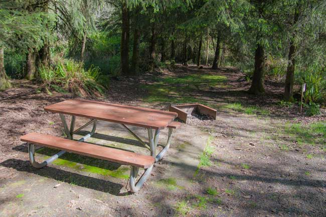
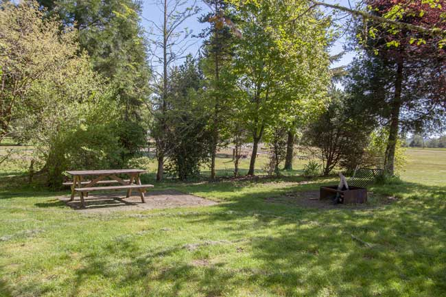
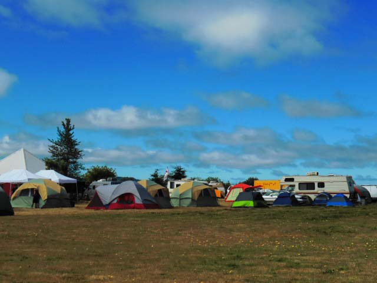
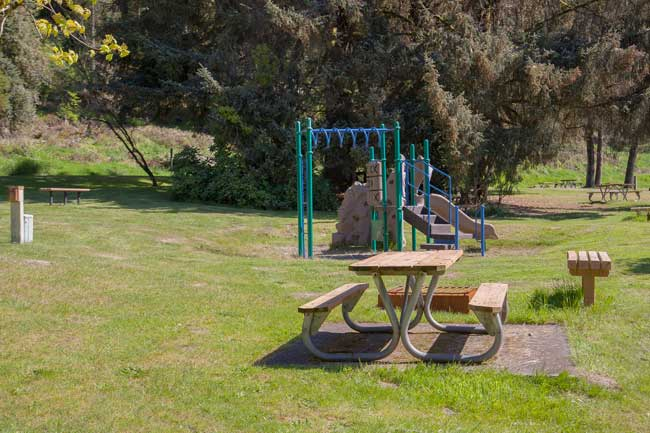
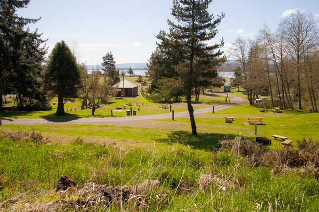

Tent Camping in the Summer
Most sites in the park are open to tent campers. The exceptions are RV sites 27-33 and sites S1- S10. All other sites can be reserved for tent camping. We have large open fields that are used for overflow and large events.
 Our dedicated tent sites are well shaded by many trees. Each site has new picnic tables, large fire pits and plenty of room for several tents. Most fire pits have barbecue grates for cooking over the fire.
 Lots of soft grass to pitch a tent in this tent only site. The beach and the Columbia River are only 100 yards away.
 This large event is utilizing one of our grass fields. Check out our events page for more information if you are interested in hosting an event in the park.
Sites 1-15 is a dual use area. All have electricity. 2,3,6,14 and 15 have water. Water is available at four separate locations for sites without water. A shower, restrooms, vending machine and playground are centrally located in this area.
